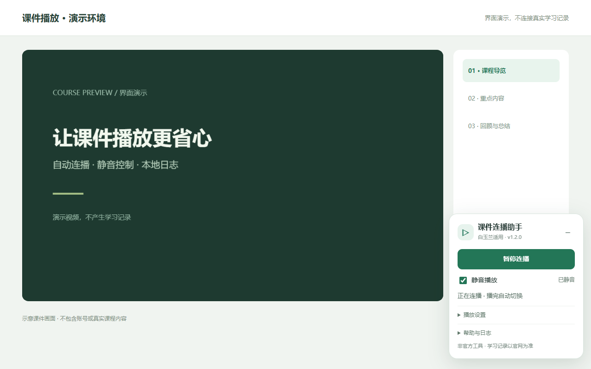
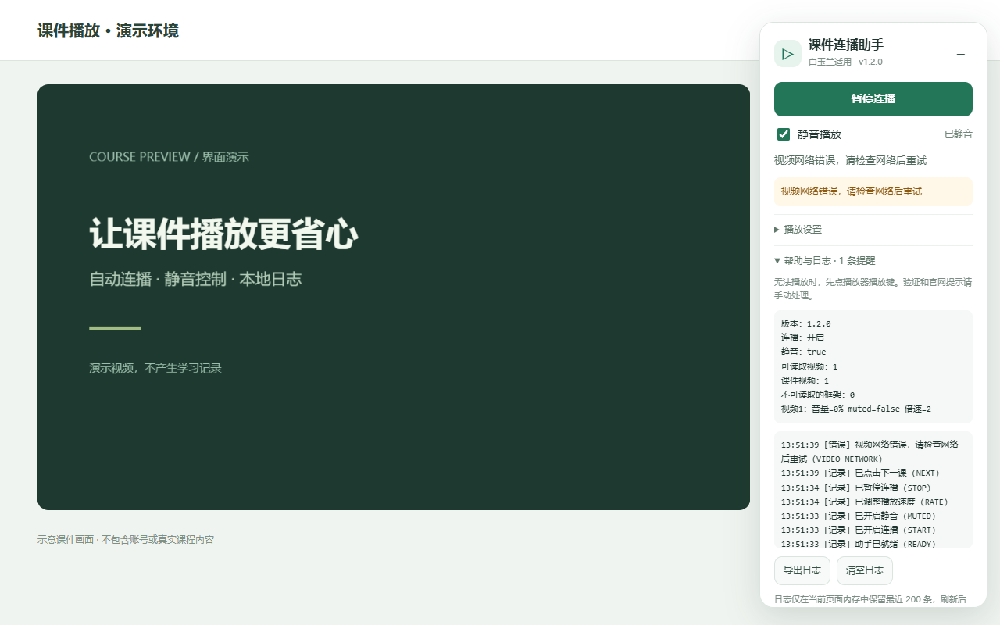

Chrome / Edge 扩展版
- 下载并解压扩展 ZIP，确认文件夹中直接有
manifest.json。 - Chrome 打开
chrome://extensions，Edge 打开edge://extensions。 - 开启开发者模式，选择“加载已解压的扩展程序”或“加载解压缩的扩展”，选中解压后的文件夹。
- 停用旧脚本、刷新白玉兰课件页，登录自己的账号后点击“开始连播”。
正式商店版本上架后会在此补充一键安装入口。当前 ZIP 不能双击直接安装。
白玉兰适用 · v1.2.0 · MIT 开源
为白玉兰远程医学网（byljxjy.com）提供课件自动连播、静音播放、倍速和本地错误日志。Chrome / Edge 扩展与油猴脚本使用同一套简洁界面，免费开放源码。
当前为 GitHub 发布版，Chrome / Edge 商店尚未上架。扩展 ZIP 需解压后加载，脚本版需 Tampermonkey 或 ScriptCat。两种版本只选一种使用。
视频自然播完后等待 5 秒，再切换当前列表下一课。可随时暂停，最后一课结束后停止。
静音兼容播放器音量重置，取消时恢复原音量。设置倍速时可查看播放器实际速度。
网络、播放或切课失败会显示提醒。日志支持查看、导出、清空，不自动上传。

manifest.json。chrome://extensions，Edge 打开 edge://extensions。正式商店版本上架后会在此补充一键安装入口。当前 ZIP 不能双击直接安装。
新版使用脚本管理器存储自己的偏好，首次升级后需要重新设置。
展开“帮助与日志”查看错误及播放器状态，导出后在 GitHub Issues 反馈。请同时说明浏览器版本、助手版本和重现步骤，截图时遮住个人资料。

两者来自同一份源码，界面和功能一致。扩展通过浏览器安装，脚本需要脚本管理器；本地设置分别保存，不能同时启用两个版本。
播放器实际速度与官网计时规则是两件事。学习进度、课时和倍速是否被认可，均以官网记录为准。本工具不直接提交学习记录、不自动考试、不承诺一分钟完成课程。
如果实际音量为 0%，仍然是无声状态。工具会兼容播放器自行取消 muted 的情况，取消静音会恢复原音量。
浏览器可能要求先点击视频播放键；官网提示框、验证需要手动处理。跨域播放器或网站结构变化也可能需要适配。请查看帮助日志并反馈。
不读取账号密码、Cookie、登录凭证、姓名或手机号，不主动向开发者发送数据。设置保存在本机，日志仅在当前页面内存保留，导出由你主动发起。详见隐私说明。